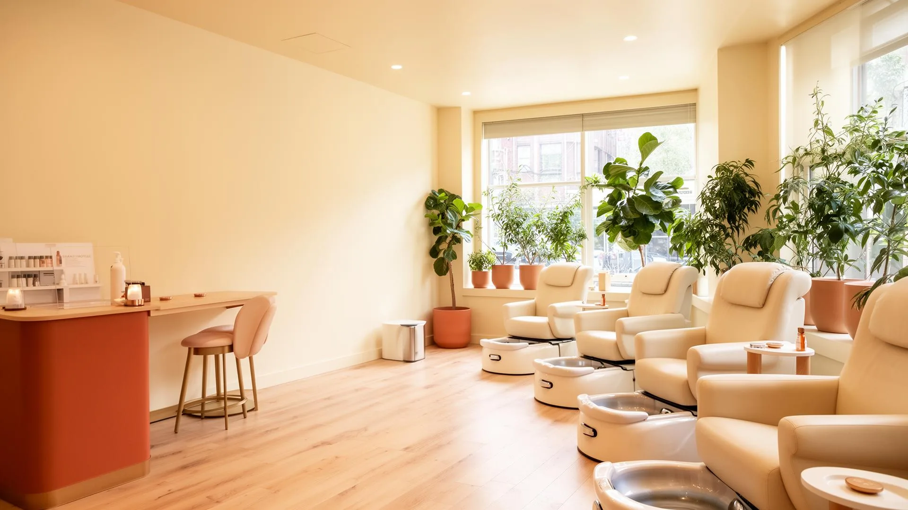
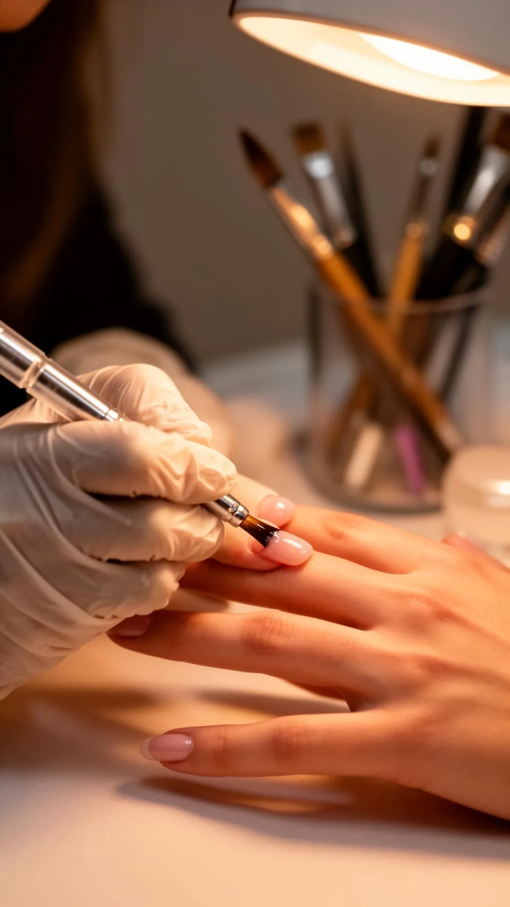
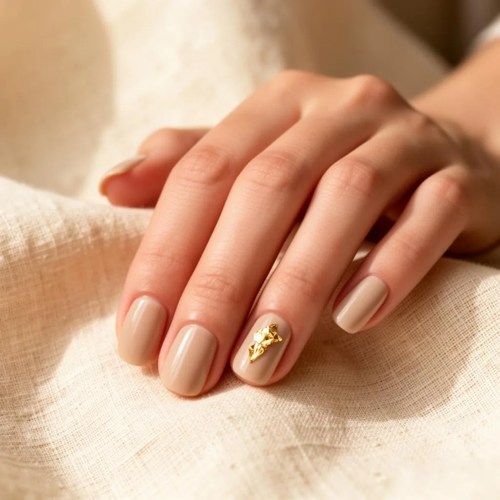
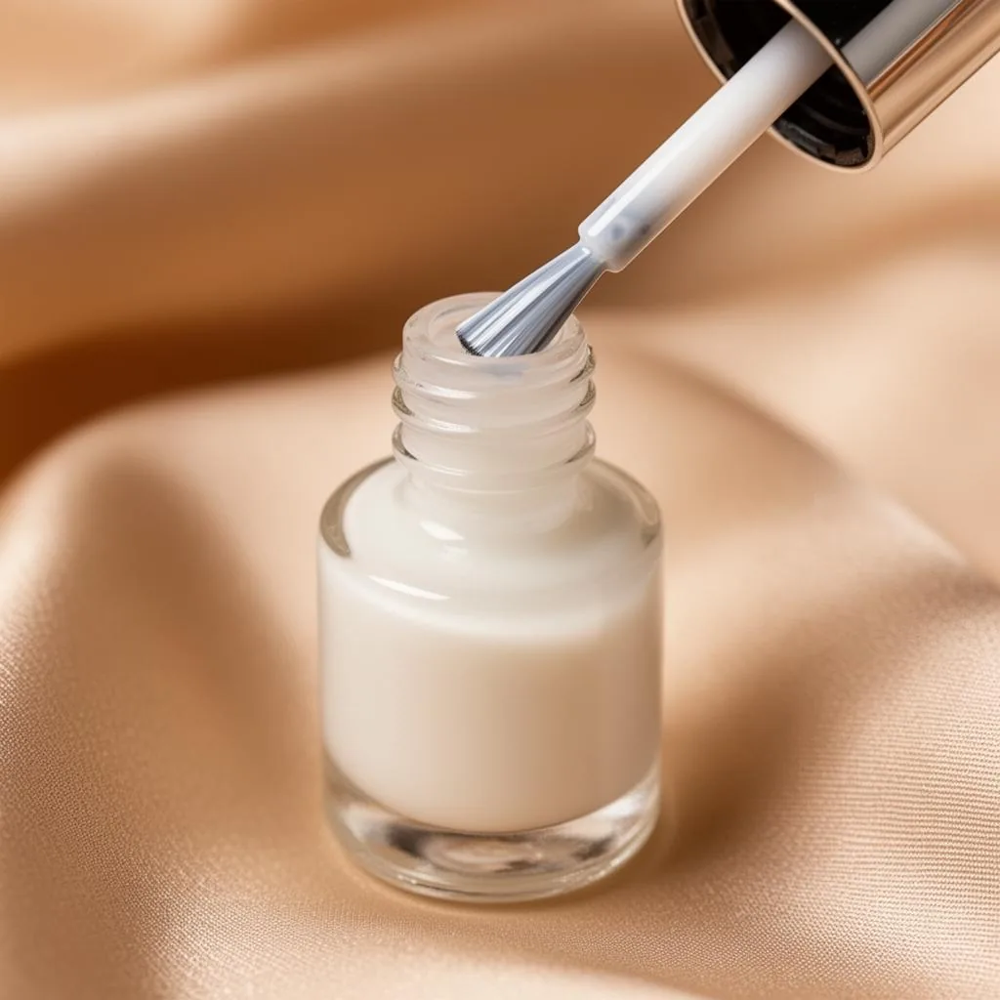
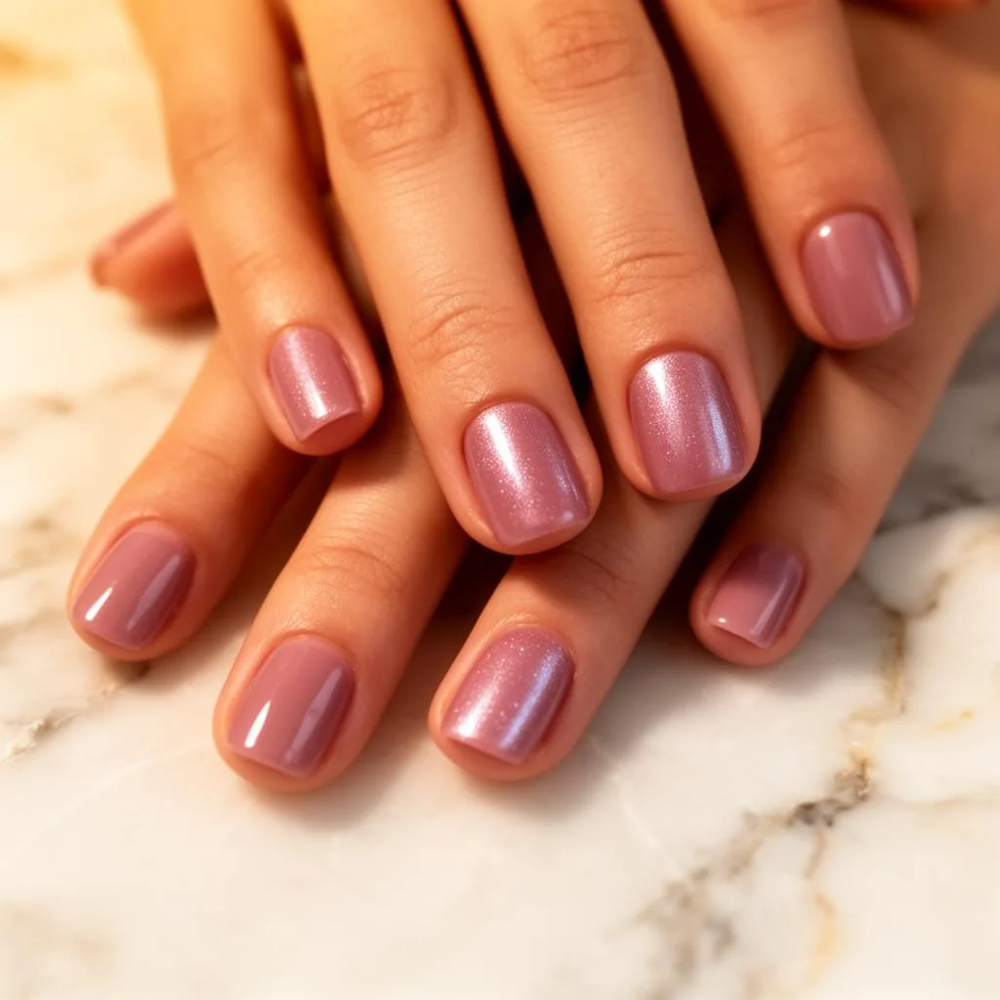
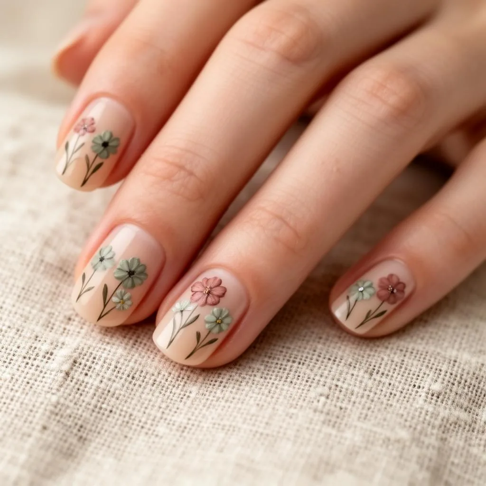

Nail studio · {{CITY}}, {{REGION}}
{{HERO_HEADLINE}}
Signature manicures, gel, spa pedicures and considered nail art in {{CITY}}, {{REGION}}[[NEED:COUNTY]] and across {{COUNTY}}[[/NEED]] — booked by appointment and unhurried by design.
-
[[NEED:LICENSE]]
- Licensed · {{LICENSE}} [[/NEED]] [[NEED:RATING,REVIEW_COUNT]]
- {{RATING}} rating · {{REVIEW_COUNT}} reviews [[/NEED]]
- Single-use files, every guest
- Signature manicures
- Gel & structured overlays
- Spa pedicures
- {{CITY}}, {{REGION}} studio [[NEED:RATING,REVIEW_COUNT]]
- {{RATING}} ★ · {{REVIEW_COUNT}} verified reviews [[/NEED]]


The studio
{{BUSINESS_NAME}}
[[NEED:OWNER_NAME]]{{OWNER_NAME}} leads the chairs at {{BUSINESS_NAME}}, a studio for[[/NEED]][[NEED:!OWNER_NAME]]{{BUSINESS_NAME}} is[[/NEED]] guests who would rather book one unhurried block than squeeze into a walk-in queue — manicures, gel, spa pedicures and nail art practiced in {{CITY}}, {{REGION}}[[NEED:COUNTY]] and across {{COUNTY}}[[/NEED]], with fresh single-use files for every guest and finishes chosen with you at the chair.
[[NEED:LICENSE]][[/NEED]]The lookbook
Finishes worth booking for
A working library of the finishes the studio is asked for most — bring a frame you love to the chair.


>


>


>

>The appointment
How a booking runs
-
Book your block
[[NEED:PHONE]]Call or text {{PHONE}}, or[[/NEED]][[NEED:!PHONE]]Use the[[/NEED]] contact options below — the studio books a real block of time, not a slot in a queue.
-
Choose the finish
Bring a reference or browse the lookbook at the chair — the finish and base are chosen for how you actually use your hands.
-
The service, unhurried
Fresh single-use files, sterilized instruments and the full block for your service — nothing rushed out the door.
-
Aftercare that lasts
You leave with a written aftercare line — how to stretch the wear and when to come back for the health of the nail.
Word of mouth
What guests say
{{REVIEW_TEXT}}
Straight answers
Questions guests ask first
Do you take walk-ins?
The studio runs on appointments so every guest gets an unhurried block. Same-day openings do come up — [[NEED:PHONE]]call {{PHONE}}[[/NEED]][[NEED:!PHONE]]use the contact options on this page[[/NEED]] and we will tell you honestly what the day looks like.
How should I prepare for my appointment?
Arrive with clean, bare nails if you can, and a few minutes early for your block. Bring reference photos of finishes you love — it is the fastest way for a nail artist to translate them onto your hands.
Can you remove a set that was done somewhere else?
Yes. Soak-off removal is a service in its own right: gel and acrylic come off gently, never peeled or ripped, and the nail plate is assessed before anything new goes on.
How is the studio kept clean?
Every guest gets fresh single-use files and buffers; metal instruments are sterilized between appointments and work surfaces are disinfected between chairs. It is process, not promise.
Do you do nail art on natural nails?
Yes — chrome, cat-eye, French, foil accents and hand-painted detail all work on natural nails, over a strengthening base chosen for how hard you are on your hands.
What if I need to change my booking?
Plans move. [[NEED:PHONE]]Call or text {{PHONE}}[[/NEED]][[NEED:!PHONE]]Use the contact options on this page[[/NEED]] as early as you can and we will move your block or adjust the service — the chair just needs to know.
Where we work
Service by town across [[NEED:COUNTY]]{{COUNTY}}[[/NEED]][[NEED:!COUNTY]]{{REGION}}[[/NEED]]
Search the way your neighbours do — the work plus the place. Each line below is the same crew and the same written price.
Ways to book
Memberships and pay-over-time
Single sessions, multi-session packages and membership pricing all run off the same published rate card. Nothing is bundled onto your bill in the chair, and every package price is confirmed before your first appointment.
- Package pricing
- Member rates
- No upsell in the chair
Book your block
Tell us the service and the day you want — the chair will be ready and unhurried.
-
[[NEED:RATING]]
- {{RATING}}rating [[/NEED]] [[NEED:REVIEW_COUNT]]
- {{REVIEW_COUNT}}verified reviews [[/NEED]]
- 6service lines
Plan your visit
Start with a conversation, not a form letter
Service area
{{CITY}}, {{REGION}}[[NEED:COUNTY]] · {{COUNTY}}[[/NEED]]
A studio for guests across {{ADDRESS_CITY}}, {{REGION}}[[NEED:POSTAL]] · {{POSTAL}}[[/NEED]].[[NEED:PROFILE_URL]] Google Business Profile.[[/NEED]]
License
{{LICENSE}}
Displayed at the studio and available in writing on request.